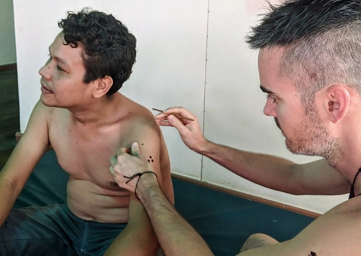
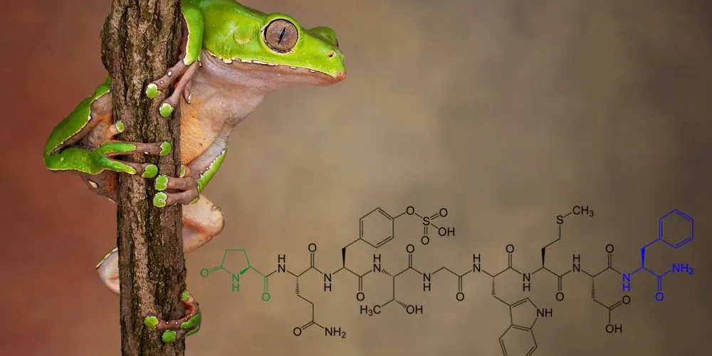

Traditional Amazonian kambo in Christchurch, NZ

Kambo ceremonies are a traditional holistic health tool of the jungle
used extensively by tribes throughout the Amazon. It involves the waxy secretion of the
Giant Monkey Tree Frog - scientifically known as Phyllomedusa Bicolor
- and has been relied brr
on for centuries by these tribes in several ways:
Kambo emerged from the jungle
and into mainstream use in the '90s,
and today is loved globally by a growing number of people for the incredible
healing potential and many holistic benefits that practise and research shows it
supports. As a member of the The International Association of Kambo Practitioners (IAKP)
- an NPO that supports safe, responsible practise of kambo sessions
through training, research and best practice
- I am excited to offer you the jungle
power of kambo in NZ if you feel called to get 'Kambo Strong' 🐸
As a trained and certified practitioner,
I aim to provide an empowering and restorative service,
with my traditional experience from the jungle combined with modern knowledge and
expertise via certification. I'm here to hold space for you during this process,
igniting your body's own processes towards healing and supercharging, as done so for
centuries by the tribes of the Amazon. In doing so, I hope to correct the unfortunate
misconceptions that some people have about this incredibly beneficial holistic healing tradition 🐸💪
physically
Supports excellent overall health by opening
the bloodflow and supporting low blood
pressure, spurring the immune
system, bringing the body back to homeostasis,
and more. For those
with chronic fatigue, pain, inflammation, infections,
long lasting viral issues, fertility
& menstrual issues,
Lyme disease and more, with amazing research into
its antimicrobial
/ antiviral / antifungal and analgesic properties.
emotionaly
Supports excellent overall health by opening
the bloodflow and supporting low blood
pressure, spurring the immune
system, bringing the body back to homeostasis,
and more. For those
with chronic fatigue, pain, inflammation, infections,
long lasting viral issues, fertility
& menstrual issues,
Lyme disease and more, with amazing research into
its antimicrobial
/ antiviral / antifungal and analgesic properties.
mentally
Supports excellent overall health by opening
the bloodflow and supporting low blood
pressure, spurring the immune
system, bringing the body back to homeostasis,
and more. For those
with chronic fatigue, pain, inflammation, infections,
long lasting viral issues, fertility
& menstrual issues,
Lyme disease and more, with amazing research into
its antimicrobial
/ antiviral / antifungal and analgesic properties.

The first person to perform studies, an Italian"...increase in physical strength, enhanced
resistance to hunger and thirst,
and more generally, increase
in the capacity to face stress situations..."
- Dr. Vittorio Erspamer, as related in the book Sapo in my Soul
This website and its images are for research and educational purposes only and not intended to advertise products for any specific
therapeutic use, treatment, nor to diagnose, treat, cure, or prevent any disease. Always consult with your healthcare professional for diagnosis
, medical advice, or with regards to any illness. This service should not replace
advice or treatment from your registered Health Practitioner . Please see 'Terms and Conditions' page for image copyrights.
© Copyright 2019 - 2026 | Privacy Policy | Terms and Conditions